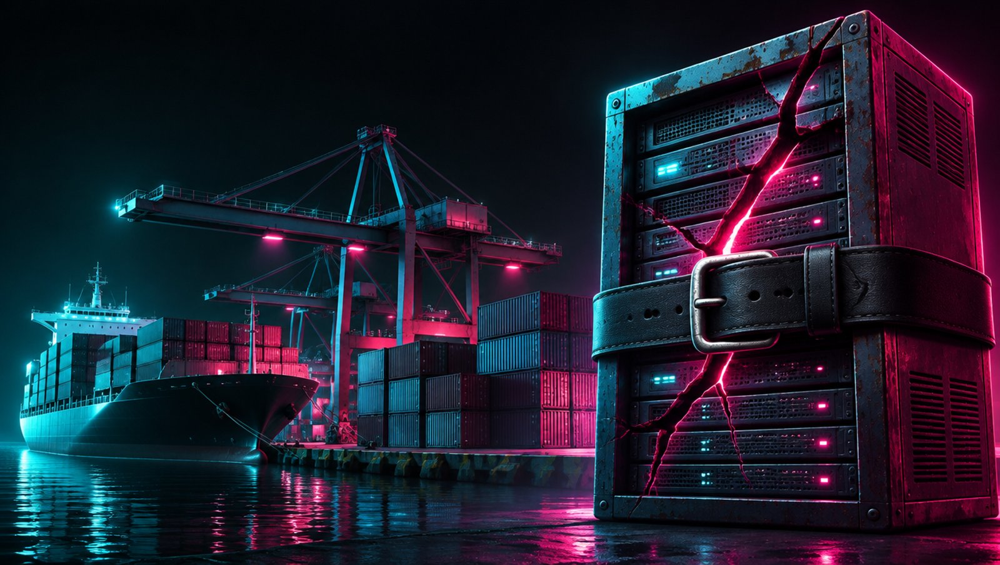

Maersk Confirms a Data Breach as WhiteArmor Demands $5 Million

Maersk Confirms a Data Breach as WhiteArmor Demands $5 Million
Maersk confirmed on 11 November 2026 that an unauthorized party reached a local legacy system inherited through an earlier acquisition and extracted data from it. The company is describing a contained hit on inherited infrastructure, not a fleet-wide outage. After M&A, that is a familiar shape: the old box still holds driver records, admin accounts, and logistics documents, and somebody still has a path to it.
What is confirmed vs claimed
BleepingComputer and follow-on reporting quote Maersk's position:
- Access and extraction happened on a local legacy system tied to a prior acquisition
- Current evidence, per Maersk, strongly suggests no sensitive data has been disclosed
- The company says the incident looks isolated, with no indication of impact on other Maersk systems or customer/partner integrations such as APIs and EDI
- Operations continue; booking and shipment management are expected to keep working
Separately, the WhiteArmor extortion group listed Maersk on its leak site around 7 November 2026 and demanded USD 5 million in bitcoin within 30 days. Public writeups of that listing (including Brandefense ATLAS and Danish coverage citing Ingeniøren) say the actor claims roughly 100 GB from an OCF / LF Logistics platform: driver records (some with plaintext passwords), staff accounts including SUPER_ADMIN roles, delivery recipients, signed receipts, inventory and ASN data, and mobile device logs.
Treat those volume and content details as actor claims until Maersk or a regulator confirms them. Extortion posts are marketing. Maersk's statement is the company-side floor. The gap between those two narratives is where phishing and fake "Maersk security" emails will live for weeks.
Maersk acquired LF Logistics in 2022. WhiteArmor's post leans on that lineage. Whether or not every claimed row is real, the defender lesson does not depend on trusting the gang: acquired logistics platforms keep privileged accounts and operational PII long after the press release.
Why this lands on the defender desk
If you run acquisitions, contract logistics, or any "temporary" integration that never got rebuilt, ask these questions now:
- Which systems still authenticate with local accounts that never entered the corporate IdP?
- Which of those still store passwords in recoverable form?
- Which SUPER_ADMIN / break-glass identities were created for cutover and never retired?
- Which partner EDI/API paths can reach the legacy host even if the main Maersk estate looks clean?
Maersk's public advice is also the right household rule for customers: treat unexpected messages that claim to relate to this incident as hostile until verified through a known Maersk contact.
Checklist
- Inventory hosts and apps tagged to acquisitions in the last five years; mark any still outside SSO and centralized logging
- Force password and token rotation on any local admin roles that can touch logistics, WMS, or TMS data
- Hunt for plaintext credential stores and shared service accounts on those platforms
- Confirm EDI/API gateways cannot jump into the legacy VLAN without MFA and allow lists
- Prep customer comms that separate confirmed facts from leak-site fiction
- Watch for brand impersonation: new domains, lookalike invoices, and "data breach support" calls
Bottom line
Maersk says a legacy acquisition system was accessed and data was taken. WhiteArmor is asking five million dollars for the privilege of believing its dump list. Find the inherited systems in your environment that would support the same company statement next week.